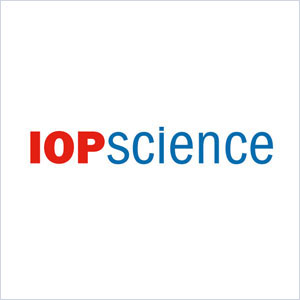

My story began when I completed my undergraduate degree at the National University of
Sciences and Technology (NUST) Islamabad in 2016. In 2020, I received the Fulbright
Scholarship for my Master's in Spatial Data Science at the University of Southern
California. During my graduate degree, I focused on integrating Spatial Data with
Machine Learning and Artificial Intelligence to solve geospatial problems.
After graduating in 2016, I started working as a back-end software engineer for the
first couple of years of my career, then gradually moved towards fullstack software
engineering roles. During my career, I have architected and built scalable software
systems from scratch, writing front-end and back-end code, leading a team of
developers, performing DevOps, and ensuring customer satisfaction. I paused my
career in 2020 at the level of Senior Software Engineer after receiving the
Fulbright Scholarship.
After completing my graduate degree in May 2022, I returned to Pakistan and joined
Airlift Technologies as an Associate Engineering Manager. Since Airlift Technologies
shut down operations in July, I joined another product start-up in August called
Byte as an Engineering Manager. Byte was also not spared from the financial hit that
a lot of companies have been taking in the recent past. In 2024, I joined a UAE-based
startup, Aura, working in the FinTech space, where I now lead engineering. I love
building at product start-ups, and I'm excited about what's next.
I read business and tech-related books. I am an avid PC gamer, and my favorite genre
is FPS. I also like watching sci-fi, horror, and thriller movies and series.
During the course of my career, I have architected and built scalable
software systems from scratch, writing front-end and back-end code
and deploying them to cloud providers. I have curated applications
that work on various platforms, including but not limited to Windows
Desktop, Windows/Linux Server, Raspberry Pi, and Android. I have
experience working in React and Angular for web development and
Flutter for cross-platform development. I have built back-end
systems in Java, Node.js, C++, and Python.
Data Science
stack: spark · hadoop · pandas · sklearn · geoai
I got the chance to dive deep into data science workflows and
pipelines during my graduate degree at USC. I worked on MapReduce,
Locality Sensitive Hashing, Recommendation Systems, Analyzing
Massive Graphs, Mining Data Streams, Linear/Logistic Regression,
Classification/Clustering, Bayesian Theory,
Parametric/Non-Parametric Models, Neural Networks, Random Forests,
Generative Models, HDFS, Apache Spark, GeoAI, Spatial Data
Wrangling, Exploratory Spatial Data Analysis, Spatially Explicit
Supervised/Unsupervised Learning, Spatially Explicit Neural
Networks, Spatial Optimization, and Prescriptive Spatial Machine
Learning to name a few.
Spatial Application Development
stack: arcgis · qgis · postgis · jts · geotools
Since I was young, I have been passionate about spatial data, how a
computer can represent the real world, and its applications. I
remember how excited I was when Google Earth got released in the
early 2000s. I used to be fascinated playing around with it. I also
remember playing Flight Simulator X when it was released, being
interested in seeing how the real world is modeled inside the game.
My passion has continued till today, and I am always very interested
in solving problems that require spatial data manipulation and
thinking about solving problems with a spatial context. The choice
of my graduate degree was also heavily influenced by this passion.
During my career, I have built a number of spatial applications,
including but not limited to; a Python server application to
generate secure, encoded, and small-sized vector map tiles,
implementation of a graph-based routing algorithm in Java,
development of multiple data QA Java applications to detect GIS data
anomalies, automated language translation of map data, development
of a mechanism to convert satellite images to raster map tiles for
loading them offline inside an android application, and
implementation of new features in a native C++ library for map
rendering on Android/iOS. I have worked on various libraries and
frameworks for spatial data manipulation and handling that run on
different platforms; Web, Desktop, and Mobile.
Mobile Development
stack: android · flutter · dart
Earlier on, I worked on native Android application development. I
built a number of Android applications during the final year of my
undergraduate degree as well as in the first couple of years of my
career. During my graduate degree at USC, I took a course on Web
Technologies that used Flutter as the primary framework. I enjoyed
working in Dart and building cross-platform applications in Flutter.
Although I haven't got a chance to work on Flutter in a professional
environment, I am keen to take this opportunity when it arrives.
Cloud Deployment
stack: aws · docker · kubernetes · serverless
I have deployed applications to bare metal servers when containers
were not widely used and understood. I got into containerization
when I learned about Docker. I used it a lot as I realized how cool
this technology is and gave a company-wide 2-hour overview of
Docker, so I could explain how useful it is and should be widely
adopted. The first platform I got my hands on for cloud deployment
was AWS, which was a game changer for me. Moving from bare metal to
containerization to the cloud has been quite a journey, and it has
been a fascinating one for me. I have considerable experience using
many AWS services, e.g., EC2, ECS, ECR, Lambda, DynamoDB, SQS, SES,
S3, ApiGateway, and ElasticBeanStalk, to name a few.
People Management
focus: hiring · 1:1s · career growth · org design
I got a chance to lead a small team of developers at Afiniti, which I
enjoyed, and I learned I have a good sense of people management. I
joined Airlift in a people management role, and it was a fantastic
experience while it lasted. Later, I joined Byte as an Engineering
Manager, again involving technical and people management
responsibilities, and I enjoyed every part of it. Now I'm heading
engineering at Aura which also heavily involves people management
responsibilities.
Started working as a technical lead and now heading engineering to build
Aura from ground-up, architecting the core product using NestJS + React
+ AWS. Major responsibilities include:
▸ Building and scaling the engineering team
and infrastructure for the core product which is now generating $200,000+
in ARR and growing continuously
▸ Leading the engineering team; actively
conducting code reviews to maintain quality of the product and conducting
regular 1:1s to ensure career growth and progression
▸ Setting up the complete infrastructure of
the product; built pipelines for automated testing and deployment
▸ Setting up the core engineering processes
and principles from scratch and continuously looking for ways to improve
them; vetting all technical solutions and ensuring there's neither
overengineering nor under-engineering and deep diving before taking
technology decisions
Worked as an engineering manager in the Engineering team to
deliver both internally and externally used web and mobile products.
Also filled in as the fullstack team lead actively involved in
designing and developing critical features and applications using
Angular + Node.js. Led a team of 10 engineers (Fullstack + Mobile +
DevOps + QA) ensuring high-quality design, development, and deployment
of new business functionalities through active code review and feedback.
Also ensured the career growth of the engineers by actively working to
improve the skills of the engineering talent.
Worked as an associate engineering manager in the Warehouse Operations
team to deliver web and mobile products used in the Airlift warehouses.
Worked as a fullstack developer with hands-on development on Angular +
Node.js. Managed a team of 6 engineers (Fullstack + Android + Automated
QA)
2020 — 2022·fulbright_scholar @ usc·los angeles, ca
The Fulbright Program
Fulbright Scholar
The Fulbright Scholarship award is a competitive program that selects
academically and professionally high-achieving individuals for a
fully-funded Master's program in the United States. The individuals
selected have a track record of accomplishment and are highly motivated
in their future goals and aspirations.
Worked as a Java software engineer for Halliburton on developing data
integration, federation, and interoperability between multiple Oil & Gas
Exploration & Production software. Key responsibilities included the
development of Teiid connectors and translators to expose data using
data virtualization, patching various modules of the application for
smooth flow of data to/from multiple connectors, extending Apache Thrift
server and client implementation in Java, C#, and C++ for various
connectors, moving Teiid connectors to Docker, development of unit and
integration tests for multiple connectors, and automation of tests after
integration with Docker.
Worked on a wide array of projects using Java, Python, and C++ and
implemented them on multiple platforms, including Desktop, Server, Web,
and Android. A few significant highlights include the development of a
Python server application to generate secure, encoded, and small-sized
vector map tiles, implementation of a graph-based routing algorithm in
Java, development of multiple data QA Java applications to detect GIS
data anomalies, automated language translation of map data, development
of a mechanism to convert satellite images to raster map tiles for
loading them offline inside an android application, and addition of new
features in the native C++ library for map rendering.
Education
2020 — 2022·m.s. spatial_data_science @ usc·los angeles, ca
University of Southern California
Master of Science (M.S.) — Spatial Data Science
CGPA: 4.00/4.00Fulbright Scholarship
DSCI-553 Foundations and Applications of Data Mining ›
MapReduce, Frequent Itemsets, Shingling, Minhashing, Locality
Sensitive Hashing, Recommendation Systems, Analyzing Massive Graphs,
Mining Data Streams, Link Analysis, Web Advertising
Python for Vector/Raster Data Manipulation, Python in ArcGIS,
Interactive Computational Geospatial Programming, Notebooks for Web
GIS, Real-Time Spatial Data Processing, Spatial Data in an IoT
Era
SSCI-581 Concepts for Spatial Thinking ›
Spatial Autocorrelation, Spatial Heterogeneity, Raster and Terrain
Analysis, Spatial Estimation & Interpolation, Spatial Modeling,
Modeling with Machine Learning, Geospatial Intelligence
2012 — 2016·b.e. @ nust·islamabad, pk
National University of Sciences & Technology (NUST)
Bachelor of Engineering (B.E.)
CGPA: 3.71/4.00PEC Registered Engineer
Research Publications
pub/2013/iop·doi:10.1088/1757-899X/51/1/012029

IOP Publishing
Cloud vector mapping using MODIS 09 Climate Modeling Grid (CMG) for the year 2010 and 2011
Asjad Asif Jah, Yousaf Bin Farrukh, Rao Muhammad Saeed Ali
Citation: Asjad Asif Jah et al. 2013 IOP Conf. Ser.: Mater. Sci. Eng. 51 012029
2013 · IOP Conference Series: Materials Science and Engineering